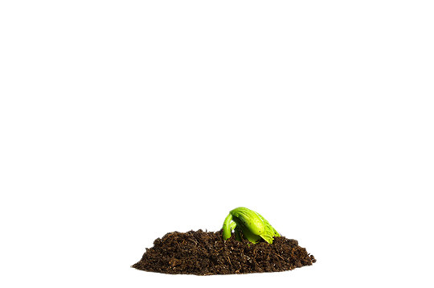
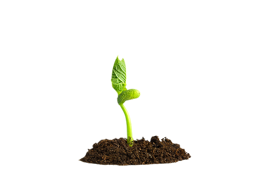
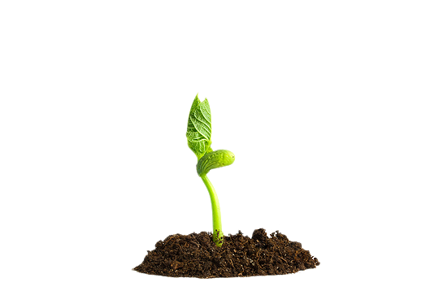

컨선월드와이드의 아주 특별한 영수증
39000000명 *2021년 한 해 기준
특별한 후원 영수증으로 투명하게 보여드릴게요!
우리는
조금 특별한 관심을
갖습니다.
한국 사회가 겪었던 그 고통은
여전히 다른 곳에 남아있습니다.
관심이 필요한 그 곳에서
아이들을 건강하게 지켜내는 일은
우리가 함께할 책임입니다.
세상의 미래인 아이들을 향한 관심
우리는 매년
아주 특별한 선택을
합니다.
- Global Hunger Index
- 전 세계 지역 및 국가 차원에서
기아를 종합적으로 측정하고 추적하는 도구
우리는 매년 세계기아지수 GHI 를 발간하고
특별한 관심이 필요한 곳을 찾아나섭니다.
세계기아지수는 전 세계 기아 현황을
정확하고 객관적으로 보여주는 지표입니다.
가장 어려운 삶을 사는 0.5%를 찾아냅니다.
도움이 절실한 사람들을 우선적으로 돕고
완전한 자립을 이루면, 또 다른 곳으로 이동합니다.
우리는 구호품 전달을 넘어
한 사람의 존엄성을 지키기 위해 노력합니다.

우리는
조금 남다른 실천을
합니다.
우리는 가난의 순환을 끊어낼 수 있는
특별한 방법을 알고 있습니다.

 



- Target:
- 빈민촌 아동과 임산부
- Nation:
-
케냐
- Details:
-
빈민촌 사람들의 영양 불균형을 해소할 수 있도록
영양소가 풍부한 간식을 개발하고 더 나아가
영양 간식을 판매하도록 일터를 제공하여 소득 창출
차파티를 팔아 아이들을
학교에 보낼 수 있어서 행복해요.
우리 마을에 건강한 먹거리를 제공하고 있다는
자부심으로 일하고 있습니다.
- Target:
- 여성 가장
- Nation:
-
차드
라이베리아
부룬디
- Details:
-
가정에서 텃밭을 가꿀 수 있는 환경을 마련하여
먹거리를 확보하고, 수익까지 이어지도록 지원
텃밭에서 자란 채소와 과일을 먹은 지
몇 개월 만에 아이들 건강이 많이 회복됐어요.
저는 요즘 이웃에게 제가 배운 비법을 공유해요.
아이를 건강하게 키우기 위한 최선의 방법이
무엇인지 알게 되었으니까요!

- Target:
- 기후 변화로 식량 확보가 어려운 사람들
- Nation:
-
말라위
차드
- Details:
-
홍수, 가뭄 등의 기후위기에도
견딜 수 있는 농업 기술을 전파해
생계를 유지할 수 있도록 지원
기후 스마트 농업 덕분에 옥수수 수확량이
8배나 늘어났어요!
시장에 팔아서 번 돈으로 더이상
아이들을 굶기지 않고
학교도 보낼 수 있게 되었어요!
나이지리아 비아프라의 내전 당시,
극심한 배고픔과 질병의 고통을 겪던 사람들이 있었습니다.
이들을 돕고 싶었던 평범한 두 청년은 모금을 통해
의약품과 식량을 가득 채운 구호선을 띄웠고,
26일만에 5톤의 구호물품을 담은 배가 그들에게 닿았습니다.
그렇게 컨선월드와이드의 특별한 항해가 시작됐습니다.
우리의 관심이 절실한 곳이
많습니다. 단 한 명도 포기할 수 없기에
우리의 노력은 멈출 수 없습니다 우리의 특별한 후원 영수증은
따뜻한 관심이 모여 채워집니다 변화를 만드는 아주 특별한 후원 영수증
지금 함께해주세요!